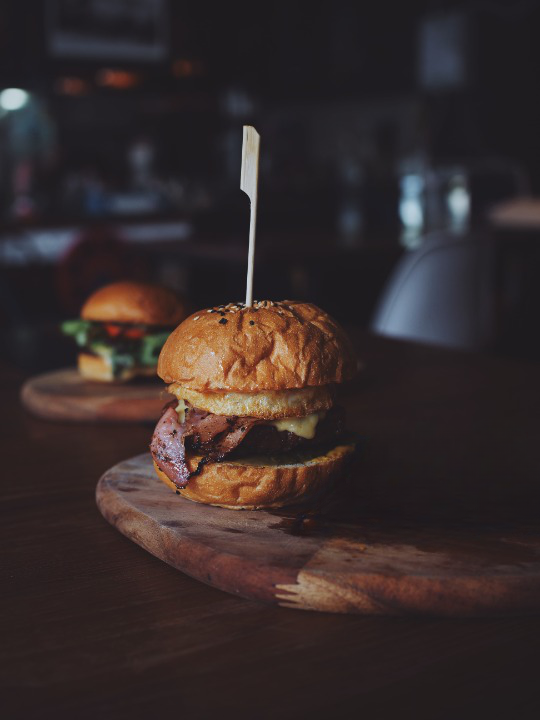

BURGER RECIPE
| Ingredient |
Quantity |
| Ground Beef |
4 lb |
Cracked Pepper |
2 tsp |
| Kosher Salt |
2 tsp |
| Dijon Mustard |
4 tbsp |
| Worcestershire Sauce |
3 tbs |
| Egg |
1 |
| Ham |
2 |
- In a bowl, mix ground beef, egg, onion, bread crumbs, Worcestershire, garlic, 1/2 teaspoon salt, and 1/4 teaspoon pepper until well blended.
- Divide mixture into four equal portions and shape each into a patty about 4 inches wide.
- Lay burgers on an oiled barbecue grill over a solid bed of hot coals or high heat on a gas grill (you can hold your hand at grill level only 2 to 3 seconds) close lid on gas grill.
- Cook burgers, turning once, until browned on both sides and no longer pink inside (cut to test), 7 to 8 minutes total. Remove from grill.
- Lay buns, cut side down, on grill and cook until lightly toasted, 30 seconds to 1 minute.
- Spread mayonnaise and ketchup on bun bottoms. Add lettuce, tomato, burger, onion, and salt and pepper to taste. Set bun tops in place.
- Enjoy your Classic Burger